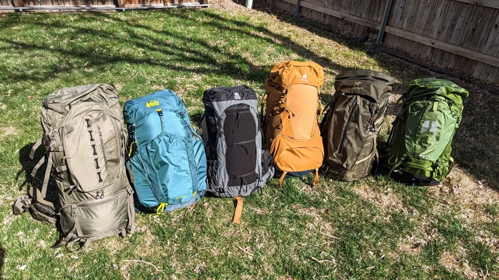

Упаковка рюкзака

Грамотная укладка рюкзака экономит силы не меньше, чем правильная обувь. Когда вес распределен хаотично, возрастает нагрузка на поясницу, плечи и колени уже в первые часы маршрута.
Тяжелые вещи размещайте ближе к спине и немного выше центра тяжести, чтобы рюкзак не «оттягивал» вас назад. Объемные, но легкие предметы лучше уходят в верх и по краям.
Часто используемое снаряжение должно быть под рукой: вода, перекус, перчатки, мембрана, аптечка первой линии. Это уменьшает количество остановок и ускоряет реакцию на смену погоды.
Отдельно продумайте упаковку на случай дождя или мокрого снега: сухие слои одежды и спальник должны иметь дополнительную влагозащиту внутри рюкзака.
Перед стартом обязательно «пройдитесь» с полностью собранным рюкзаком хотя бы 10–15 минут. Так проще заметить перекосы, точки давления и неудобные зоны доступа.
Главная цель укладки — не идеальная фотография, а стабильный баланс в движении и быстрый доступ к важным вещам в реальной погоде.